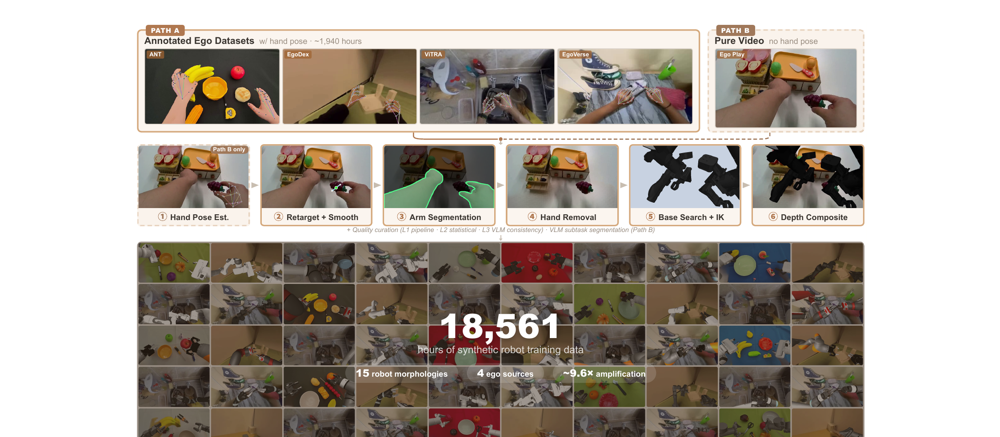

Ego2Robot: Scalable Robot Data Synthesis from Egocentric Human Data
总览 · 论文五问
2 分钟建立全局：Ego2Robot 是一条把第一视角人类操作视频批量转成机器人训练数据的流水线——重定向手部动作、把画面里的人手换成机器人臂、再做多级质检。产出 18,561 小时 / 15 种机器人形态，是目前最大的 ego-to-robot 数据集。你关注的"数据质检怎么做"是 §03 的重点，这里先把它放进全局。
| ① 背景 | VLA 泛化受限于机器人演示数据的规模和多样性；真机遥操作贵、受硬件限制、交互多样性低。第一视角人类视频海量、场景/任务丰富，但人-机器人本体差距大，不能直接用。 |
| ② 基于什么 | 站在 retarget-and-render（把手部运动重定向到机器人运动学 + 视觉上把人手替换成机器人臂）这条路线上；工具链：WiLoR + DynHaMR（手姿估计）、SAM 3（臂分割）、ProPainter（去手 inpainting）、MuJoCo（IK）、Qwen3.5（VLM 质检 + 长视频子任务切分）；评测扩展 RoboTwin 2.0。 |
| ③ 前人缺陷 | retarget-and-render 以前只在小规模 / 单任务验证，没人知道大规模 ego2robot 合成数据能否当 VLA 预训练数据、真提升 OOD 泛化。而且现有评测把视觉/场景/本体/语义多种扰动混成一个 OOD 分数，没法归因是哪种泛化在起作用。 |
| ④ 核心 insight | 尽管本体不同，第一视角操作视频里含可迁移的交互规律，只要对齐得当就能补机器人数据。把它 scale 到 18,561h / 15 形态，并用解耦评测（视觉/场景/本体/语义四轴分开）证明：收益主要来自不变性 + 跨分布鲁棒性，而不是单纯增加轨迹覆盖。 |
| ⑤ 效果 | 18,561h（最大 ego-to-robot 数据集，约 9.6× 放大）。Ego2R + Robot 1:1 co-training 在 7 列里 5 列领先：RoboTwin Randomized 53.5%（+2.6 vs robot-only），Clean 保持 68.1%。视觉扰动收益最大（背景 +4、光照 +8、机器人配色 +6）。真机 ARX ACone 5 个长程任务验证。 |
数据源（"能力从哪来"）
四个第一视角数据源，处理前约 1,940 小时标注 ego 数据，跨 15 形态渲染后放大到 18,561 小时：
| 数据源 | 时长 | 说明 · 帧率下采样（对齐机器人速度） |
|---|---|---|
| ANT | 7h | 团队自采 pick-and-place，带手姿标注 · 降到 60%（≈1.7× 慢） |
| EgoDex | 732h | 标注 ego 数据 · 降到 60%（≈1.7× 慢） |
| ViTRA | 249h | 降到 25%（≈4× 慢，人手动作最快） |
| EgoVerse | 954h | 降到 45%（≈2.2× 慢） |
第一视角人手操作速度远快于机器人遥操作。若直接用会让合成动作太快、机器人学不动。所以按来源分别把帧率下采样（相当于放慢动作），把速度分布对齐到机器人数据。这本身也是一种"对齐"，不是质检，但和数据质量直接相关。
Pipeline · 两路径三阶段
上一节说"重定向 + 视觉替换 + 质检"三件事，这一节把它铺成一条完整流水线：两条输入路径（有没有手姿标注）汇合后，走 动作对齐 → 视觉对齐 → 质检 三阶段。看懂这条链，§03 的质检才知道"在哪一步、筛掉什么"。

第 1 步 · 估手姿（Path B）
纯视频先估出 21 个手关键点；Path A 已有标注直接跳过。
输入是什么：相机图像或视频，加上任务指令和机器人当前状态。它们还是原始观测，模型尚未把它们变成可用于预测或控制的特征。
这一步究竟做什么：本步骤执行“· 估手姿（Path B）”。具体来说，纯视频先估出 21 个手关键点；Path A 已有标注直接跳过。 这里处理的只是整条链路中的一个接口：把上一步的结果整理成下一步能够正确读取和继续计算的形式。
输出到哪里：经过本步骤处理、含义更明确的中间结果。这个结果会交给下一步“· 重定向 + 平滑”继续处理。
为什么不能省略：它把未经处理的原始问题变成后续模块可以计算的输入，是整条链路的起点。
第 2 步 · 重定向 + 平滑
手关键点 → 夹爪 EEF 轨迹（虚拟指尖 + TCP + 抓取朝向），Savitzky-Golay + SLERP 去抖。动作速度按来源下采样对齐机器人。
输入是什么：来自上一步“· 估手姿（Path B）”的产物：经过本步骤处理、含义更明确的中间结果。本步骤还会按论文设置读取当前条件、时间步或训练信号。
这一步究竟做什么：手关键点 → 夹爪 EEF 轨迹（虚拟指尖 + TCP + 抓取朝向），Savitzky-Golay + SLERP 去抖。动作速度按来源下采样对齐机器人。
输出到哪里：一个或多个候选未来、动作或轨迹，以及必要的中间状态。这个结果会交给下一步“· 臂分割”继续处理。
为什么不能省略：它承担上下两步之间的接口；缺少它，前一步产生的信息无法以正确格式或正确含义传到下一步。
第 3 步 · 臂分割
SAM 3 分出人臂 mask，时序一致，供去手用。
输入是什么：来自上一步“· 重定向 + 平滑”的产物：一个或多个候选未来、动作或轨迹，以及必要的中间状态。本步骤还会按论文设置读取当前条件、时间步或训练信号。
这一步究竟做什么：本步骤执行“· 臂分割”。具体来说，SAM 3 分出人臂 mask，时序一致，供去手用。 这里处理的只是整条链路中的一个接口：把上一步的结果整理成下一步能够正确读取和继续计算的形式。
输出到哪里：经过本步骤处理、含义更明确的中间结果。这个结果会交给下一步“· 去手”继续处理。
为什么不能省略：它承担上下两步之间的接口；缺少它，前一步产生的信息无法以正确格式或正确含义传到下一步。
第 4 步 · 去手
ProPainter 按 mask inpaint 抹掉人手、补背景。
输入是什么：来自上一步“· 臂分割”的产物：经过本步骤处理、含义更明确的中间结果。本步骤还会按论文设置读取当前条件、时间步或训练信号。
这一步究竟做什么：本步骤执行“· 去手”。具体来说，ProPainter 按 mask inpaint 抹掉人手、补背景。 这里处理的只是整条链路中的一个接口：把上一步的结果整理成下一步能够正确读取和继续计算的形式。
输出到哪里：经过本步骤处理、含义更明确的中间结果。这个结果会交给下一步“· base 搜索 + IK”继续处理。
为什么不能省略：它承担上下两步之间的接口；缺少它，前一步产生的信息无法以正确格式或正确含义传到下一步。
第 5 步 · base 搜索 + IK
搜一个机器人底座位姿让轨迹运动学可行，逐形态各搜各的。这一步天然会淘汰"够不到 / 解不出 IK"的轨迹。
输入是什么：来自上一步“· 去手”的产物：经过本步骤处理、含义更明确的中间结果。本步骤还会按论文设置读取当前条件、时间步或训练信号。
这一步究竟做什么：搜一个机器人底座位姿让轨迹运动学可行，逐形态各搜各的。这一步天然会淘汰"够不到 / 解不出 IK"的轨迹。
输出到哪里：可发送给机器人控制器的动作，以及执行后重新观测到的真实状态。这个结果会交给下一步“· 深度合成”继续处理。
为什么不能省略：它承担上下两步之间的接口；缺少它，前一步产生的信息无法以正确格式或正确含义传到下一步。
第 6 步 · 深度合成
渲染机器人、按深度合成进场景，得到成品视频。之后进入三级质检（§03）。
输入是什么：来自上一步“· base 搜索 + IK”的产物：可发送给机器人控制器的动作，以及执行后重新观测到的真实状态。本步骤还会按论文设置读取当前条件、时间步或训练信号。
这一步究竟做什么：本步骤执行“· 深度合成”。具体来说，渲染机器人、按深度合成进场景，得到成品视频。之后进入三级质检（§03）。 这里处理的只是整条链路中的一个接口：把上一步的结果整理成下一步能够正确读取和继续计算的形式。
输出到哪里：经过本步骤处理、含义更明确的中间结果。这是图中这条链路的最终产物，随后会进入真实执行、模型更新或指标评测。
为什么不能省略：它把前面得到的内部结果落实为可执行动作、可训练模型或可解释指标，完成从方法到结果的最后一步。
ego 视频相机位姿五花八门，world-frame 动作需要逐视频标定。Ego2Robot 用相机坐标系下的相对 EEF 动作表示末端位移——天然统一了不同相机设置和机器人形态的数据，不用逐条标定。
三级质检 · L1 帧级 → L2 统计级 → L3 VLM 一致性 ★重点
合成数据最大的风险是"看起来像、其实是垃圾"——IK 崩了、机器人穿模、动作瞬跳、或者渲染出来根本没在做那个任务。Ego2Robot 用三道由细到粗的漏斗把这些筛掉：L1 逐帧查物理合法性、L2 逐轨迹查统计异常、L3 逐 episode 用 VLM 查"语义上做没做对"。粒度从帧 → 轨迹 → episode 逐级放大。
L1 像质检流水线上的单件合格检测（这一帧物理上成立吗）；L2 像批次统计抽检（这条轨迹的数值分布正常吗、有没有突跳）；L3 像人工终检（整段视频语义上真在做那个任务吗）——只不过"人工"换成了 Qwen3.5。前两级筛物理/统计，第三级筛语义。
L1（Pipeline-internal）· 逐帧物理合法性
在流水线处理时就打标：一帧有效当且仅当同时满足四个条件，任一不满足即无效——
| # | 有效条件（全部满足才算有效帧） |
|---|---|
| i | 检测到手（hand detected） |
| ii | IK 跟踪误差 < 0.05 m（机器人真能跟上这个目标位姿） |
| iii | 渲染出的机器人可见（> 0 像素，没被完全遮挡/出画） |
| iv | 无自碰撞（MuJoCo contact check） |
另外两条额外失效规则（专治双臂穿模和"机器人糊满屏"）：
夹在两段无效区间之间的短有效段（长度 < ⌊0.3 × fps⌋ 帧）会被腐蚀成无效。
直觉：如果一小撮"有效帧"孤零零地卡在两坨无效帧中间，它们大概率是抖动/误判造成的假有效——留着会让轨迹在有效/无效之间反复横跳、切出一堆碎片。干脆一起标无效，保证留下的是连续、干净的有效段。这是形态学里的"腐蚀"操作搬到时间轴上。
L2（Statistical）· 逐轨迹统计异常
L1 之后，再上两个事后统计滤波（都排除已被 L1 判无效的帧再算）：
对每个动作维度，按数据集算出 Q1（1% 分位）和 Q99（99% 分位）。落在下面区间之外的帧被标记：
- $Q_1,\ Q_{99}$
- 该动作维度在整个数据集上的 1% 和 99% 分位数（算之前先剔掉 L1 已无效的帧，避免被垃圾污染统计）
- $Q_{99}-Q_1$
- 1%–99% 分位区间宽度（一种鲁棒的"量程"，比标准差抗离群点）
- $\times 3$ 向两侧外扩
- 在这个量程外再各放宽 3 倍才判异常——宽容边界，只砍掉真正离谱的极端值（如重定向爆出的巨大动作），不误伤正常的大动作
对每一步，在 state/action 轨迹上算 residual（残差）、acceleration（加速度）、jerk（加加速度）；任一超过该维度的分布阈值就标记。专治重定向/IK 造成的瞬间跳变——加速度和 jerk 对"不连续"最敏感。
L1 + L2 都跑完后，统计每条 episode 的总无效帧占比：超过 60% 就整条 episode 丢弃。
逻辑：零星坏帧可以靠后续插值/容忍，但如果一条轨迹超过六成的帧都有问题，这条数据已经"烂到根"了——修不如弃，留着只会污染训练。
L3（VLM Consistency）· 逐 episode 语义终检
前两级只管物理和数值，管不了"机器人到底有没有在做那个任务"。L3 用 Qwen3.5 审每条合成视频：按 4 fps 采样 + 子任务文字描述一起喂给 VLM，让它判断动作和描述是否语义一致。判为不一致的 episode 丢弃。
prompt 的设计很讲究——既要抓真错，又不能被"合成数据的正常特征"误伤。原文 prompt：
You are evaluating whether a manipulation video matches its text description.
This is a ROBOT manipulation dataset. "Hand" refers to the robot's gripper/end-effector.
Many tasks use FAKE or SIMULATED objects as stand-ins for real objects. This is EXPECTED.
Task Description: {description}
Determine if the robot's actions match the described task.
Flag MAJOR MISMATCHES: wrong action type, wrong object category,
wrong target location, or failed execution.
Be tolerant of: fake/toy objects, minor appearance variations,
small spatial deviations, different grasping approaches.
Respond in JSON: {"is_consistent": true/false, "confidence": 0.0-1.0, "reasoning": "..."}①「Hand = 机器人夹爪」：不然 VLM 会疑惑"视频里怎么没有人手"。
②「假/仿真物体是 EXPECTED」：合成数据里大量用玩具/替身物体，不提醒的话 VLM 会因为"这不是真苹果"而误判不一致。
③ 明确区分「该 flag 的重大不匹配」vs「该容忍的小差异」：重大 = 动作类型错 / 物体类别错 / 目标位置错 / 执行失败；容忍 = 玩具物体、外观差异、小空间偏差、不同抓法。
—— 本质是把"合成数据的固有噪声"从"真正的语义错误"里摘出去，让 VLM 只抓后者。
L1 帧级（物理：IK/可见/自碰撞/穿模 + 稳定性腐蚀）→ L2 轨迹级（统计：分位数外扩 + 突变，超 60% 弃 episode）→ L3 episode 级（语义：VLM 审"做没做对"）。粒度从帧到 episode 逐级放大，物理→统计→语义逐级抽象。这套"多级、由细到粗、物理+统计+VLM 混合"的质检，是合成数据能当预训练数据用的关键前提。
上游"隐形"质检 · 流水线里顺手筛掉的坏数据
§03 是显式命名的三级质检。但其实流水线的每一步都在顺手筛数据——这些没挂"质检"的名，却实实在在决定了数据质量。补齐这条链，才知道一条轨迹要过多少道关。
| 在哪一步 | 顺手筛掉了什么 · 怎么筛 |
|---|---|
| 手姿 / mask | mask 之外的像素直接丢弃，只保留手/臂区域参与后续处理 |
| 时序平滑 | 速度跳变滤波：逐帧算 $v_t=\lVert p_t-p_{t-1}\rVert$，超阈值的帧用邻居插值替换；旋转速度用 floor 10.0/fps rad/frame。迭代 2 轮，把重定向/检测抖动压平。 |
| base 搜索 + IK | 候选底座距 base < 0.08 m 的直接丢弃；其余按 IK 可行率打分（100 次迭代、$10^{-5}$ 阈值）+ reach 惩罚，取最优。够不到 / 解不出 IK 的轨迹在这步天然被淘汰。 |
手姿/mask 过滤 → 速度跳变插值（2 轮）→ base 可行性筛选 → L1 帧级 → L2 统计级 → L3 VLM 语义级。前三是"边处理边筛"的隐形质检，后三是显式三级质检。合成数据能不能当预训练数据，靠的就是这一整条层层设卡。
效果
解耦评测（视觉/场景/本体/语义四轴）下的结果：Ego2R+Robot 1:1 co-training 领先、视觉扰动收益最大（背景 +4 / 光照 +8 / 配色 +6）、真机 5 长程任务验证；以及形态数量 scaling、混合比例（1:3 / 3:1 / 1:1）消融。（待读 §5–§6 后展开）